چکیار (Cheque Yar)
سکوی دیجیتال کشف و اتصال در بازار نقدشوندگی چکهای صیادی و مطالبات
✓ ماموریت سامانه
تسهیل و شفافسازی فرآیند معرفی و کشف فرصت تنزیل چک میان دارندگان چک مدتدار و سرمایهگذاران خریدار، با حداقل اصطکاک و حذف واسطههای سنتی غیرشفاف.
✦ نقش رگولاتوری شفاف
واسط فناورانه و Marketplace اطلاعاتی — بدون نگهداری یا لمس وجوه مالی در لایه اول. تسویه و ظهرنویسی در بستر رسمی سامانه صیاد بانک مرکزی.
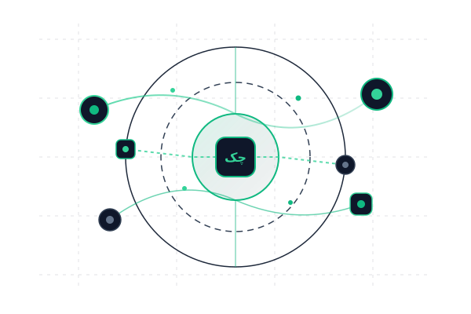
بحران نقدینگی و اصطکاک بازار سنتی
چرا تبدیل چکهای مدتدار به سرمایه در گردش پرهزینه و ناامن است؟
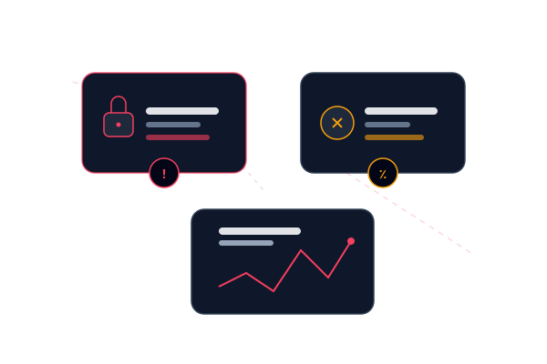
Marketplace هوشمند کشف و اتصال
زیرساخت دیجیتال تطبیق مستقیم، کشف نرخ پیشنهادی و ارزیابی ریسک
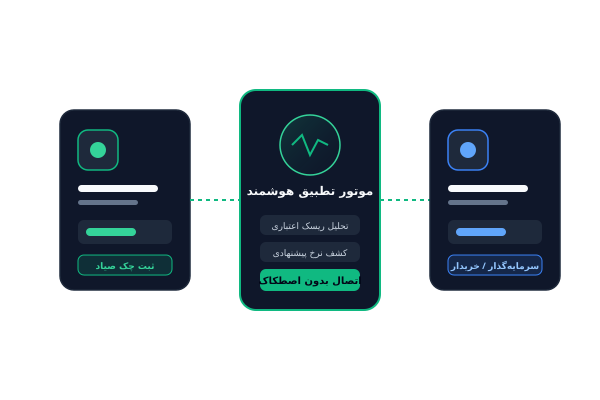
بازار چند صد همتی معاملات چک صیاد
فرصت تحول دیجیتال در بزرگترین ابزار پرداخت اعتباری کشور
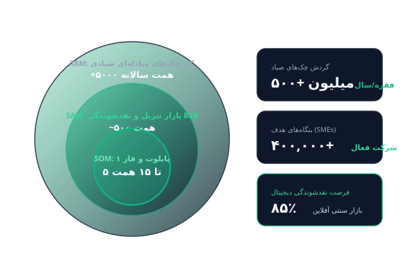
معماری ۳ لایهای و گامهای مقیاسپذیری
کاهش ریسک رگولاتوری در فاز نخست و آمادگی کامل فنی برای گسترش آتی
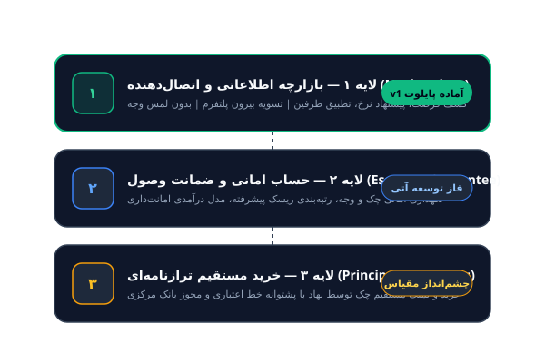
جریان کامل معامله در چکیار v1
از احراز هویت دوسطحی تا کشف، ابراز تمایل و تایید تسویه
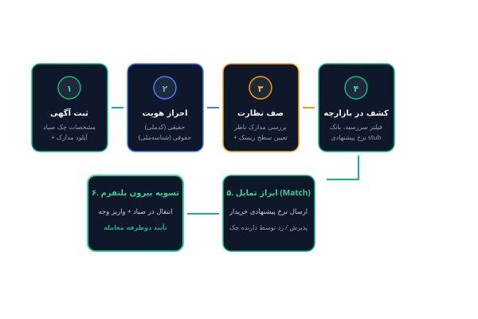
پشته فناوری مقیاسپذیر و ایمن
طراحی ماژولار مبتنی بر استانداردهای مهندسی روز و زبان طراحی یکپارچه

جریانهای متنوع و چندلایه درآمدی
از کارمزد اتصال در فاز ۱ تا اشتراک سازمانی و خدمات ارزش افزوده

استراتژی گامبهگام نفوذ در بازار B2B
شروع از پایلوت کنترلشده با اصناف هدف تا مقیاس ملی
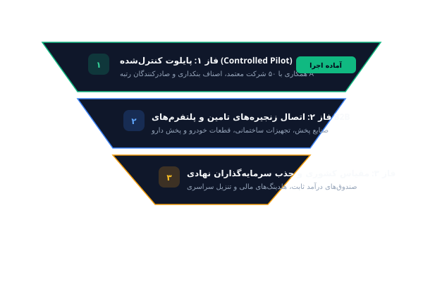
چهار ستون مزیت رقابتی چکیار
چرا رقبا بهسادگی قادر به بازتولید ارزش چکیار نیستند؟

مرز دقیق مسئولیت و انطباق کامل حقوقی
تفکیک صریح نقش Marketplace از نهادهای واسطهگر مالی
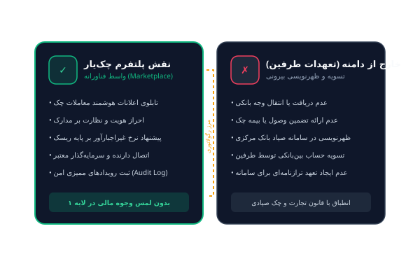
وضعیت فعلی: v1 لایه ۱ آماده پایلوت
پایان فاز توسعه و تست؛ آماده اجرای آزمایشی کنترلشده
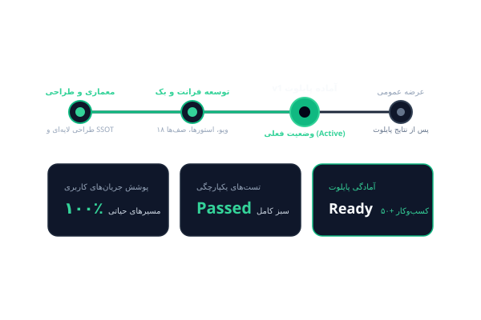
تخصیص هوشمند منابع در راند بذری
تمرکز سرمایه بر اجرای پایلوت، جذب B2B و ارتقای زیرساخت مهندسی
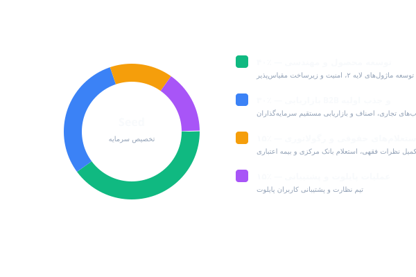
دموکراسی دسترسی به سرمایه در گردش
دعوت از سرمایهگذاران و همکاران تجاری برای تحول در بازار چک کشور
✓ جمعبندی ارزش پیشنهادی
چکیار اولین پاسخ دیجیتال و شفاف به بحران نقدینگی زنجیره تامین در ایران است. ما با محصولی آماده پایلوت و معماری مقیاسپذیر در آستانه جهش قرار داریم.
✉ اطلاعات ارتباطی و مشارکت
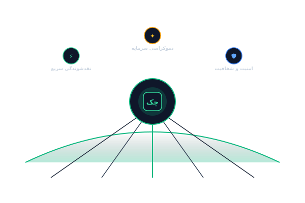